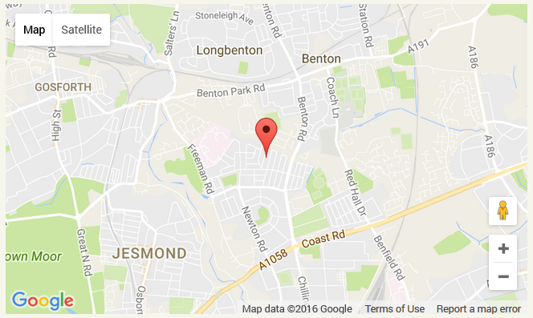

Heaton Tutoring
Heaton TutoringTutor
Welcome to Heaton Tutoring! My name is Catherine Powell. I am a fully qualified primary teacher offering tutoring to primary age children within Newcastle upon Tyne. Please read on to find out more...

Tutoring and School
Every child deserves the very best education. Schools and teachers work hard to offer this to all children in their care. However, school life can be fast paced and busy. Tutoring can give your child the individual attention they need at a pace that suits them. This personalised support can really work wonders. Tutoring can improve your child's confidence and help them make great progress.

Professional Experience
I have worked in local primary schools in Newcastle and North Tyneside for the past 6 years. I have extensive experience supporting children 1:1 and of working with
children with a variety of special educational needs, such as dyslexia. I have a very strong academic background and therefore a great subject knowledge on which to
base my teaching. I have a BA (Hons) in Biological Sciences from Oxford University and a PGCE in primary education from Newcastle University.
Personal Support
I offer personalised support tailored to your child's individual needs in all areas of the curriculum, specialising in mathematics and English. Individual attention by a qualified teacher means your child can focus on their key areas. With supportive tutoring, your child can really blossom and grow.

Tutoring Sessions
As an experienced primary school teacher, I have in depth knowledge of the school curriculum from Year 1 to Year 6. This enables me to accurately assess your child's learning needs. I am able to plan peronalised learning activities to build on your child's strengths and correct any misconceptions. I plan enjoyable learning activities that will engage your child. My sessions aim to develop your child's love of learning and foster independence. I am able to offer tutoring in Maths, English and all other parts of the school curriculum.


Location
I am able to provide tutoring sessions either at your home or within my own quiet home in High Heaton.

Safeguarding
I have a fully up-to-date DBS (Disclosure and Barring Service) certificate.
Pricing
My usual charges are £20 an hour. I am happy to discuss discounts for tutoring more than one child per session.
Contact
Please get in touch to discuss how I may be able to help your child today! You can reach me through my email address or Facebook page.